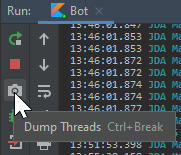

Frequently Asked Questions¶
Didn't find an answer? Try asking in our Discord server
What is a Guild?
In Discord API terminology a "Guild" is often used to refer to Discord servers with channels/roles/users
How do I make a bot account and add it to my server?
- Create an application at: https://discord.com/developers/applications/me
- Create a bot account for that application
- Get the client id of your application
- Replace
CLIENT_IDin this link: https://discord.com/api/oauth2/authorize?scope=bot&client_id=CLIENT_ID - Open the link, select your server and authorize the bot
How do I connect my bot?
- Before you can connect you need to create a bot account
- Get the token of your bot
- Create your main class in an already setup project with JDA
- Supply the token to your JDABuilder instance and build!
public static void main(String[] args) throws Exception { JDABuilder.createDefault(THE_TOKEN).build(); }
Does this work with Kotlin?
Yes! This library makes use of the JSR-305 annotations to be as compatible as possible with Kotlin. To be more idiomatic, you can use extensions like JDA-KTX and JDA-reactor.
Why does method XXX not do anything? / What are RestActions?
When you use one of JDA's methods that interacts with Discord (like sending a message or retrieving data) and the method
seems to have no effect (and no errors), chances are that you didn't use a RestAction properly or not at all.
You can read about what a RestAction is and how to use it in the appropriate Wiki entry.
What is sharding?
When a bot reaches 2500 joined guilds, Discord will refuse to start a connection with it.
In order to connect bots of a size like that it has to shard the load. It is recommended to have 1000 guilds per shard.
More information can be found in our README.
How can I change the Playing...?
This is called a Presenceand can be modified either before building JDA or at runtime.
When building you can do JDABuilder.setActivity(Activity.playing("Thrones")) and later change it using JDA.getPresence().setActivity(...).
In addition you may change the online status using setStatus(OnlineStatus.INVISIBLE) at the aforementioned locations.
This may only be updated 5 times every 20 seconds and all other updates will be silently dropped by Discord.
What is an Custom Emoji and Unicode Emoji?
While there are a lot of standardized emojis (defined through Unicode spec), Discord allows Guilds to add their own emojis to be available. Those custom emojis are not just a plain Unicode character, but rather their own entity with id, name, ...
To make this distinction more clear, we refer to the standard (Unicode) emojis as UnicodeEmoji and the Discord entities as CustomEmoji in JDA.
You can create instances of this for use in various methods, such as reactions, using the factory methods of the Emoji interface. For instance, to create a unicode emoji instance, you use Emoji.fromUnicode("...") with the string of unicode characters.
To get the Unicode char(s) of some Emoji, you can either use a 3rd party library (such as emoji-java) or just look them up online. You can add reactions with 3 different formats:
// custom
message.addReaction(Emoji.fromFormatted("<:minn:245267426227388416>")).queue();
// unicode escape
message.addReaction(Emoji.fromUnicode("\uD83D\uDE02")).queue();
// codepoint notation
message.addReaction(Emoji.fromUnicode("U+1F602")).queue();
- Custom Emoji (
<:name:id>) - Unicode escape as UTF-16 characters (
\uXXXX\uXXXX) - Codepoint Notation as UTF-32 characters (
U+XXXXXXXXU+XXXXXXXX)
Why is there a warning from SLF4J when starting up?
As of JDA 3.3.1, we use SLF4J for message logging. This means that you have to manually add any suitable SLF4J implementation library to your project.
If your project does not have a SLF4J implementation library, following warning will be shown on startup:
SLF4J: Failed to load class "org.slf4j.impl.StaticLoggerBinder".
SLF4J: Defaulting to no-operation (NOP) logger implementation
SLF4J: See http://www.slf4j.org/codes.html#StaticLoggerBinder for further details.
We currently provide a fallback implementation to not lose logging completely in this case. This fallback does not allow for a lot of configuration and we suggest using a proper implementation instead.
I recommend Logback. You can just add it to your Gradle/Maven file as extra dependency. There is a basic setup guide in our wiki available here: Logging Setup
What is the best way to delete messages from history?
You can use MessageChannel.getIterableHistory to get an instance of MessagePaginationAction which can be used to load messages in various ways such as takeAsync(amount) or takeUntilAsync(condition). This can be combined with MessageChannel.purgeMessages to bulk delete them from the channel. Keep in mind that purgeMessages will not delete all messages at once.
Examples
// Delete a number of messages
void deleteMessages(MessageChannel channel, int amount) {
channel.getIterableHistory()
.takeAsync(amount) // CompletableFuture<List<Message>>
.thenAccept(channel::purgeMessages); // bulk deletes the messages from the channel (if possible)
}
// Delete messages up to the specified time
void deleteUntil(MessageChannel channel, OffsetDateTime time) {
channel.getIterableHistory()
.takeUntilAsync(message -> message.getTimeCreated().isBefore(time)) // Collect messages until they pass the time condition
.thenAccept(channel::purgeMessages); // bulk deletes the messages from the channel (if possible)
}
// Delete a number of messages for a specific author (this can be abstracted to any condition)
void deleteFromUser(MessageChannel channel, User author, int amount) {
List<Message> messages = new ArrayList<>(); // First create a list for your messages
channel.getIterableHistory()
.forEachAsync(m -> { // Loop over the history and filter messages
if (m.getAuthor().equals(author)) messages.add(m); // Add these messages to a list (your collector)
return messages.size() < amount; // keep going until limit is reached (might be smart to also have a time condition here)
}) // This is also a CompletableFuture<Void> so you can chain a callback
.thenRun(() -> channel.purgeMessages(messages)); // Run after loop is over, delete the messages in your list
}
How can I send a message to a specific channel without an event?
Since you decided that you want to send a message to a specific channel you should already have either an ID or the NAME and optionally GUILD (ID/NAME) to locate this channel. Now all you need is access to the JDA instance of your bot session. This can easily be accomplished by passing the JDA instance as a parameter to the constructor of your class.
With the JDA instance you can easily acquire the specific channel through your means. One example is the getTextChannelById(id) method and the other is the getTextChannelsByName(name, true) method. Note that names might not be unique to one channel (example "general") so the getTextChannelsByName(...) method returns a List<TextChannel> containing all matches for that specific name. If you desire a specific guild you can filter by first getting the guild via either getGuildById(guildId) or getGuildsByName(guildName, true) and calling the same methods on the guilds rather than the JDA instance. It is not recommended to keep a reference to a Guild stored for long as the JDA cache might stop updating the specific instance in favor of a new one later on (for example when reconnecting).
Example - Handling the JDA instance
public class EventChannel {
private final JDA api;
public EventChannel(JDA api) {
this.api = api;
}
public void start() { ... }
}
Once you have this structure you have two choices of passing the JDA instance:
public static void main(String[] args) {
JDABuilder.createDefault(TOKEN)
.addEventListeners(listener) // some other listeners/settings
.addEventListeners(new ListenerAdapter() {
@Override public void onReady(ReadyEvent event) {
new EventChannel(event.getJDA()).start(); // starts your channel with the ready event
}
}).build();
}
public static void main(String[] args) {
JDA api = JDABuilder.createDefault(TOKEN)
.addEventListeners(listener) // some other listeners/settings
.build();
new EventChannel(api.awaitReady()).start();
}
How can I wait for a user response?
Since JDA is event based you can implement a finite state machine.
See my stackoverflow answers: - How to make a Discord Bot wait for a specific user to send a message with JDA? - Repetitive Consumer For Loop
How can I find out which RestAction causes an ErrorResponseException?
RestAction.setPassContext(true); // enable context by default
RestAction.DEFAULT_FAILURE = Throwable::printStackTrace;
Doing this will result in performance loss so it is recommended to only go to this extreme when you need to debug errors. To handle failures of a specific action, read this RestAction queue returned failure.
How do I test other builds?
You can use JitPack to provide other branches of JDA as a dependency. We have a tutorial on how to use it on this wiki page.
How can I reduce the jar size of my bot?
To reduce the jar size of your bot you can either use Maven or Gradle. Alternatively use the minimized jar from the download server with the name JDA-%VERSION%-withDependencies-min.jar
-
Exclude OPUS natives if you don't need encoding/decoding of audio (With LavaPlayer you don't need these natives)
For Kotlin DSL useimplementation("net.dv8tion:JDA:$VERSION") { exclude module: "opus-java" }exclude(module="opus-java") -
Minimize your Jar with the Shadow Plugin
shadowJar { minimize() }
-
Exclude OPUS natives if you don't need encoding/decoding of audio (With LavaPlayer you don't need these natives)
<dependency> <groupId>net.dv8tion</groupId> <artifactId>JDA</artifactId> <version>$VERSION</version> <exclusions> <exclusion> <groupId>club.minnced</groupId> <artifactId>opus-java</artifactId> </exclusion> </exclusions> </dependency> -
Minimize your Jar using the shade plugin
<plugin> <groupId>org.apache.maven.plugins</groupId> <artifactId>maven-shade-plugin</artifactId> <version>3.2.1</version> <configuration> <minimizeJar>true</minimizeJar> </configuration> <executions> <execution> <phase>package</phase> <goals> <goal>shade</goal> </goals> </execution> </executions> </plugin>
How can I reduce the memory footprint of my bot?
The default behavior of JDA is to cache everything except for messages. However, the library user can choose to disable some parts of the cache to decrease the memory impact of the bot process in exchange for less context and possibly more garbage accumulation.
As of JDA 4.2.0 we use 3 factory methods to build JDA instances.
createDefault- Enables cache for users who are active in voice channels and all cache flagscreateLight- Disables all user cache and cache flagscreate- Enables member chunking, caches all users, and enables all cache flags
You can do more configuration manually though:
-
Disable cache flags with
JDABuilder#disableCache(CacheFlag...)
This will disable certain cached entities such as the presences (activities) of users or channel permission overrides for members. -
Enable lazy loading with
JDABuilder#setChunkingFilter(ChunkingFilter.NONE)
This will only load members who actively participate in servers and not wait for users to load on startup. -
Disable Gateway Intents
JDABuilder#disabledIntents(EnumSet)
This will disable unused events from being received such as GUILD_MESSAGES_TYPING or similar. -
Disable Member Cache
JDABuilder#setMemberCachePolicy(MemberCachePolicy)
This will be used by JDA to decide whether to cache a member/user. You can useNONEto cache no users. -
Change the threading configuration with the pool setters:
JDABuilder#setCallbackPool(ExecutorService)JDABuilder#setGatewayPool(ScheduledExecutorService)JDABuilder#setRateLimitPool(ScheduledExecutorService)
How do I make a thread dump?
The JDK provides a utility for creating a thread dump of a running JVM process: jstack -l <pid> (that's an L for "Long")
Example: jstack -l 1337 > dump.txt This will list the thread dump and write it to a file called dump.txt.
Tip
You can get the PID using jps -l.
You can also create a thread dump directly in IntelliJ:


This will copy the thread dump to your clipboard and you can save it to a text file.